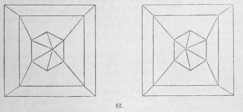
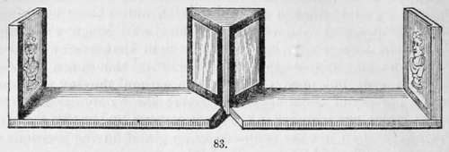
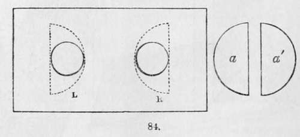

Chapter XI. The Stereoscope
Description
This section is from the book "A Manual Of Photography", by Robert Hunt. Also available from Amazon: A Manual of Photography.
Chapter XI. The Stereoscope
From the interest which this very interesting optical instrument has excited, and the very intimate relation which exists between it and photography, since it is only practical to produce images suited for the instrument by the agency of the camera obscura, it is thought advisable to devote a short chapter to some notice of it. It is not intended that any examination of the phenomena of vision, or of the application of the stereoscope to the explanation of single vision with a pair of eyes, shall be attempted; these questions would be somewhat out of place in the present manual, and would occupy too large a space if properly dealt with.
The stereoscope is before the world : a simple description, therefore, of the forms under which it may be constructed, and a sufficient explanation of its principles, is all that can here with propriety find a place. The name is compounded from two Greek words, signifying solid, and I see, and adopted from the fact that two pictures on a plane surface will, when adjusted in the instrument, resolve themselves into one image, and that image will acquire an apparently distinct solidity, being represented as an object having three dimensions,—length, breadth, and thickness.
"The theory"—of single vision with a pair of eyes—says Mr. Wheatstone, in his valuable Memoir " On some remarkable and hitherto unobserved Phenomena of Binocular Vision,"— " The theory which has obtained the greatest currency is that which assumes that an object is seen single because its pictures fall on corresponding points of the two retinæ; that is, on points which are similarly situated with respect to the two centres, both in distance and position. This theory supposes that the pictures projected on the retime are exactly similar to each other, corresponding points of the two pictures falling on corresponding points of the two retinae." Leonardo da Vinci, in his Treatise on Painting, has some remarks on the peculiarity of vision, which bear in a singular manner on the phenomena of the stereoscope, to the effect, that a painting, though conducted with the greatest art and finish to the last perfection, both with regard to its contours, its lights, its shadows, and its colours, can never show a relievo equal to that of natural objects, unless these be viewed at a distance, and with a single eye; for if an object, as an orange, be viewed by a single eye, all objects in that space behind it, which we may suppose to be included in its shadow, are invisible to that eye; but open the other eye without moving the head, and a portion of these becomes visible: those only are hid from sight which are included in the space covered by the two shadows formed by two candles supposed to be placed in the positions of the eyes. The hidden space is so much the shorter according to the smallness of the object, and its proximity to the eyes. Upon this Mr. Wheatstone remarks:—" Had Leonardo da Vinci taken, instead of a sphere, a less simple figure for the purpose of his illustrations—a cube for instance—he would not only have perceived that the object obscured from each eye a different part of the more distant field of view, but the fact would also have been forced upon his attention,—that the object itself presented a different appearance to each eye".
If any of my readers will be at the trouble to look at a simple solid form, keeping the head perfectly steady, with a single eye, and make an outline drawing of the image as seen—say, first with the left eye, and then with the right eye—it will be found that two dissimilar forms will be obtained analogous to those represented in the following diagram:—
By a little effort, it is easy, by squinting, to resolve these two figures into one, when it will be found that an apparently solid image is formed from these dissimilar outlines of a solid.
The stereoscope of Professor Wheatstone is arranged to produce this in a more effective manner. The instrument, fig. 83, consists of two plane mirrors, so adjusted that their backs form an angle of ninety degrees with each other. These mirrors are fixed by their common edge upon an horizontal board, in such a manner that, upon bringing it close to the face, each eye sees the image reflected from the two ends of the instrument in a different mirror; at each end of the board are panels in which the drawings are placed. The two reflected images coincide at the intersection of the optic axes, and form an image of the same apparent magnitude as each of the component pictures. This instrument is called the reflecting stereoscope; and as it will admit of being made of any size, so as to allow of the introduction of large pictures, it offers many advantages. Mr. Wheatstone suggested in his memoir, already quoted, the use of an instrument constructed with prisms, which is analogous to the beautifully portable lenticular stereoscope of Sir David Brewster, described by him in the Philosophical Magazine.
This instrument consists of two semi-lenses, placed at such a distance that each eye views the picture or drawing opposite to it, through the margin of the semi-lens, or through parts of it equidistant from the margin. A lens, a á, being cut in two halves, these are fixed into a frame l and r, and adjusted to such distances that the centres of the semi-lenses correspond with the pupil of the eyes. The distance of the centre of one pupil from the other is at an average 2 1/2 inches, and to this the semi-lenses may be adjusted; but if the instrument is provided with the means of effecting a little change in this respect, it will often be found to be of considerable advantage.
" When we thus view," says Sir David Brewster. " two dissimilar drawings of a solid object, as it is seen by each eye separately, we are actually looking through two prisms, which produce a second image of each drawing, and when these second images unite, or coalesce, we see the solid image which they represent. But in order that the two images may coalesce, without any effort or strain on the part of the eye, it is necessary that the distance of the similar parts of the two drawings be equal to twice the separation produced by the prism. For this purpose measure the distance at which the semi-lenses give the most distinct view of the drawings; and having ascertained, by using one eye, the amount of the refraction produced at that distance, or the quantity by which the image of one of the drawings is displaced, place the drawings at a distance equal to twice that quantity; that is, place the drawings so that the average distance of similar parts in each is equal to twice that quantity. If this is not correctly done, the eye of the observer will correct the error by making the images coalesce without being sensible that it is making any such effort. When the dissimilar drawings are thus united, the solid will appear standing, as it were, in relief, between the two plane representations".
Continue to: